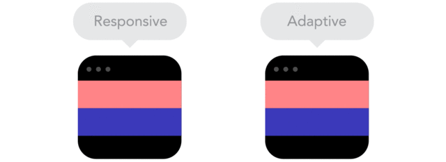

article

UNDERSTANDING THE DIFFERENCE BETWEEN MOBILE-FIRST, ADAPTIVE AND RESPONSIVE DESIGN
We often hear people talk about terms, such as mobile-first and responsive—only to scratch our head as to what they really mean. Want to make sure you follow trends without getting caught up in the hype? Let’s start by demystifying these buzzwords in order to gain clarity and determine if a mobile-first strategy is right for your brand.
The web is a vastly different landscape than what it once was. Did you know that 68 million Google searches are carried out on mobile devices every hour around the globe? What’s more: 69% of travellers start their online searches on a mobile device!
In fact, mobile bookings in the travel industry grew by 1700% between 2011 and 2015, moving from 1% to 18% of online revenues. Now imagine how those numbers have skyrocketed in 2017! I was recently conducting a website audit for a ski resort, and we found that 65% of their website traffic was now coming from mobile devices!
Mobile users are a force to be reckoned with—and it’s a reality marketers must deal with in order to ensure long-term success.
WHAT IS RESPONSIVE DESIGN?

The term responsive web design, first coined by Ethan Marcote in 2010, describes a technique in which a website’s design is automatically adjusted based on the size of users’ screens. Thanks to responsive design, users can easily browse a website regardless of what device they use.
The site’s layout and content will change based on the width of a browser on a device. Quick tip: You can determine whether or not a website is responsive by manually zooming in and out of the browser window.
The site’s layout and content will change based on the width of a browser on a device. Quick tip: You can determine whether or not a website is responsive by manually zooming in and out of the browser window.
Responsive design means that you only need one website. The design, content, and user interface of your website is adapted so that visitors can seamlessly visit it on any device and any browser.
You no longer have to create two versions of a website—one for desktop computers and one for mobile devices. You can always tell if a website has been designed for mobile devices with the URL that starts with a “m,” such as m.facebook.com.
WHAT IS AN ADAPTIVE WEBSITE? When a website features a responsive design, it means it will adapt to the width of users’ screens, allowing for maximum versatility. If a website is adaptive, it will adapt to specific screen widths of desktop computers, tablets or smartphones.
Devices all have set browser widths that are widely known and enable developers to develop websites that will adhere to their specifications.